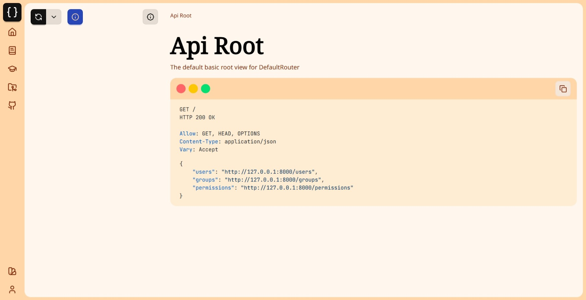

The Browsable API
It is a profoundly erroneous truism... that we should cultivate the habit of thinking of what we are doing. The precise opposite is the case. Civilization advances by extending the number of important operations which we can perform without thinking about them.
— Alfred North Whitehead, An Introduction to Mathematics (1911)
API may stand for Application Programming Interface, but humans have to be able to read the APIs, too; someone has to do the programming. Django REST Framework supports generating human-friendly HTML output for each resource when the HTML format is requested. These pages allow for easy browsing of resources, as well as forms for submitting data to the resources using POST, PUT, and DELETE.
URLs
If you include fully-qualified URLs in your resource output, they will be 'urlized' and made clickable for easy browsing by humans. The rest_framework package includes a reverse helper for this purpose.
Formats
By default, the API will return the format specified by the headers, which in the case of the browser is HTML. The format can be specified using ?format= in the request, so you can look at the raw JSON response in a browser by adding ?format=json to the URL. There are helpful extensions for viewing JSON in Firefox and Chrome.
Authentication
To quickly add authentication to the browesable api, add a routes named "login" and "logout" under the namespace "rest_framework". DRF provides default routes for this which you can add to your urlconf:
from django.urls import include, path
urlpatterns = [
# ...
path("api-auth/", include("rest_framework.urls", namespace="rest_framework"))
]
Customizing
The browsable API is built with Twitter's Bootstrap (v 3.4.1), making it easy to customize the look-and-feel.
To customize the default style, create a template called rest_framework/api.html that extends from rest_framework/base.html. For example:
templates/rest_framework/api.html
{% extends "rest_framework/base.html" %}
... # Override blocks with required customizations
Overriding the default theme
To replace the default theme, add a bootstrap_theme block to your api.html and insert a link to the desired Bootstrap theme css file. This will completely replace the included theme.
{% block bootstrap_theme %}
<link rel="stylesheet" href="/path/to/my/bootstrap.css" type="text/css">
{% endblock %}
Suitable pre-made replacement themes are available at Bootswatch. To use any of the Bootswatch themes, simply download the theme's bootstrap.min.css file, add it to your project, and replace the default one as described above. Make sure that the Bootstrap version of the new theme matches that of the default theme.
You can also change the navbar variant, which by default is navbar-inverse, using the bootstrap_navbar_variant block. The empty {% block bootstrap_navbar_variant %}{% endblock %} will use the original Bootstrap navbar style.
Full example:
{% extends "rest_framework/base.html" %}
{% block bootstrap_theme %}
<link rel="stylesheet" href="https://cdn.jsdelivr.net/npm/bootswatch@3.4.1/flatly/bootstrap.min.css" type="text/css">
{% endblock %}
{% block bootstrap_navbar_variant %}{% endblock %}
For more specific CSS tweaks than simply overriding the default bootstrap theme you can override the style block.

Screenshot of the bootswatch 'Cerulean' theme

Screenshot of the bootswatch 'Slate' theme
Third party packages for customization
You can use a third party package for customization, rather than doing it by yourself. Here is 3 packages for customizing the API:
- drf-restwind - a modern re-imagining of the Django REST Framework utilizes TailwindCSS and DaisyUI to provide flexible and customizable UI solutions with minimal coding effort.
- drf-redesign - A package for customizing the API using Bootstrap 5. Modern and sleek design, it comes with the support for dark mode.
- drf-material - Material design for Django REST Framework.


Screenshots of the drf-restwind
Screenshot of the drf-redesign
Screenshot of the drf-material
Blocks
All of the blocks available in the browsable API base template that can be used in your api.html.
body- The entire html<body>.bodyclass- Class attribute for the<body>tag, empty by default.bootstrap_theme- CSS for the Bootstrap theme.bootstrap_navbar_variant- CSS class for the navbar.branding- Branding section of the navbar, see Bootstrap components.breadcrumbs- Links showing resource nesting, allowing the user to go back up the resources. It's recommended to preserve these, but they can be overridden using the breadcrumbs block.script- JavaScript files for the page.style- CSS stylesheets for the page.title- Title of the page.userlinks- This is a list of links on the right of the header, by default containing login/logout links. To add links instead of replace, use{{ block.super }}to preserve the authentication links.
Components
All of the standard Bootstrap components are available.
Tooltips
The browsable API makes use of the Bootstrap tooltips component. Any element with the js-tooltip class and a title attribute has that title content will display a tooltip on hover events.
Login Template
To add branding and customize the look-and-feel of the login template, create a template called login.html and add it to your project, eg: templates/rest_framework/login.html. The template should extend from rest_framework/login_base.html.
You can add your site name or branding by including the branding block:
{% extends "rest_framework/login_base.html" %}
{% block branding %}
<h3 style="margin: 0 0 20px;">My Site Name</h3>
{% endblock %}
You can also customize the style by adding the bootstrap_theme or style block similar to api.html.
Advanced Customization
Context
The context that's available to the template:
allowed_methods: A list of methods allowed by the resourceapi_settings: The API settingsavailable_formats: A list of formats allowed by the resourcebreadcrumblist: The list of links following the chain of nested resourcescontent: The content of the API responsedescription: The description of the resource, generated from its docstringname: The name of the resourcepost_form: A form instance for use by the POST form (if allowed)put_form: A form instance for use by the PUT form (if allowed)display_edit_forms: A boolean indicating whether or not POST, PUT and PATCH forms will be displayedrequest: The request objectresponse: The response objectversion: The version of Django REST Frameworkview: The view handling the requestFORMAT_PARAM: The view can accept a format overrideMETHOD_PARAM: The view can accept a method override
You can override the BrowsableAPIRenderer.get_context() method to customise the context that gets passed to the template.
Not using base.html
For more advanced customization, such as not having a Bootstrap basis or tighter integration with the rest of your site, you can simply choose not to have api.html extend base.html. Then the page content and capabilities are entirely up to you.
Handling ChoiceField with large numbers of items.
When a relationship or ChoiceField has too many items, rendering the widget containing all the options can become very slow, and cause the browsable API rendering to perform poorly.
The simplest option in this case is to replace the select input with a standard text input. For example:
author = serializers.HyperlinkedRelatedField(
queryset=User.objects.all(),
style={'base_template': 'input.html'}
)
Autocomplete
An alternative, but more complex option would be to replace the input with an autocomplete widget, that only loads and renders a subset of the available options as needed. If you need to do this you'll need to do some work to build a custom autocomplete HTML template yourself.
There are a variety of packages for autocomplete widgets, such as django-autocomplete-light, that you may want to refer to. Note that you will not be able to simply include these components as standard widgets, but will need to write the HTML template explicitly. This is because REST framework 3.0 no longer supports the widget keyword argument since it now uses templated HTML generation.